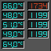
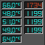

|
H O M E
|
wmc2d
About
wmc2d is a dockapp to monitor the coretemp temperature and cpufreq frequency.License AGPLv3: GNU Affero General Public License version 3
The name comes from the "core 2 duo", but now more cpu types are supported.
This is a small dockapp, which shows the core temperature and cpu frequency from 2 upto 4 cores/cpus and the temperature of upto two ACPI thermal zones, which are normaly the motherboard temperature.
All cpus, which are supported by the linux kernel "coretemp" and "cpufreq" modules, could be monitored. f.e. core 2, core i.
Only libxcb (X C-language Bindings library) and the standard C library are as external libraries required.
News
Mon Aug 16 13:30:54 CEST 2010
Version 2.04 released.
Added support for 'core2' or 'core i' dual or quad core cpu's.
Added support to display 0, 1 or 2 thermal zones.
Added support to run on any x11 screen.
Added support to show turboboost frequency in red color
Fri May 21 13:01:21 CEST 2010
Version 2.03 released.Code cleanups, added support for sleep, while system is idle.
Wed May 12 14:03:21 CEST 2010
Version 2.02 released.Found some old cleanups unreleased. Better redraw of content.
Thu Apr 30 10:12:25 CEST 2009
Version 2.01 released.Removed shared pixmaps, not needed for wmc2d, but wmc2d didn't worked, where shared pixmap aren't available.
Thu Apr 30 00:27:28 CEST 2009
Version 2.0 released.Documentation
doxygen generated source documentation.Screenshots
![[screenshot1]](wmc2d_1.png "Screenshot transparent")
![[screenshot2]](wmc2d_2.png "Screenshot with fluxstyle emerge") 

Downloads
Source Version 2.04 (GIT-7ae51bb)wmc2d-2010-08-16-13.tar.bz2
Source Version 2.03 (GIT-1062ac6)
wmc2d-2010-05-21-12.tar.bz2
Source Version 2.02 (GIT-2305b28)
wmc2d-2010-05-12-14.tar.bz2
Source Version 2.01 (GIT-d8a73b0)
wmc2d-2009-04-30-10.tar.bz2
Source Version 2.00 (GIT-5604023)
wmc2d-2009-04-30-00.tar.bz2
Johns johns98 @ gmx . net